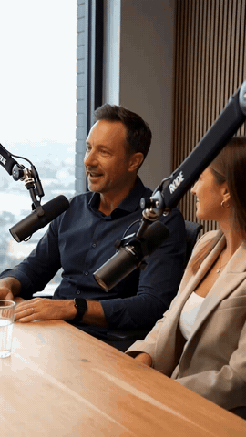

Transforme vídeos longos em cortes virais
em poucos minutos
A IA encontra os melhores momentos, reenquadra em 9:16 seguindo o rosto e coloca legendas animadas. Sem internet, sem créditos.
YouTubeTwitchKickArquivos do PC
ou
Cortes
quantos, de que tamanho e sobre o quê
Salvar cortes em
Reenquadrar
formato do vídeo final